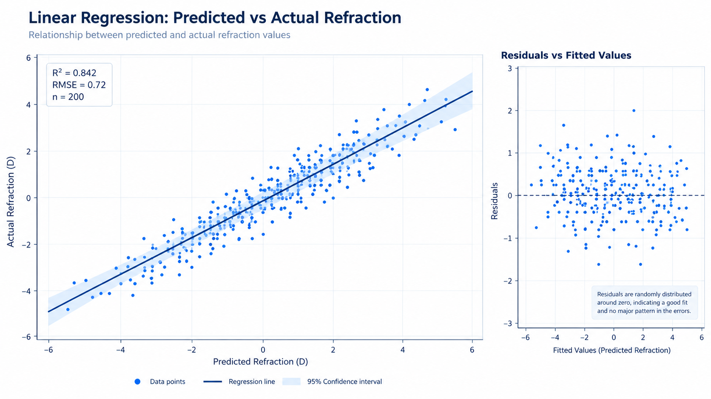
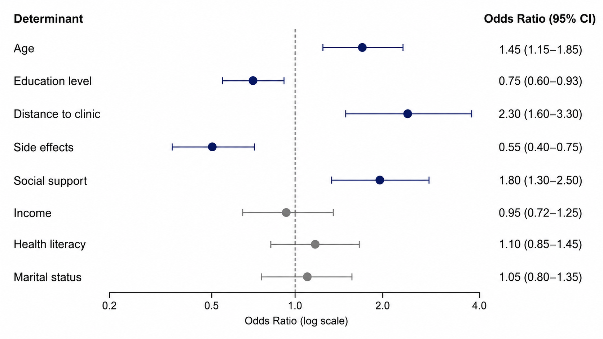
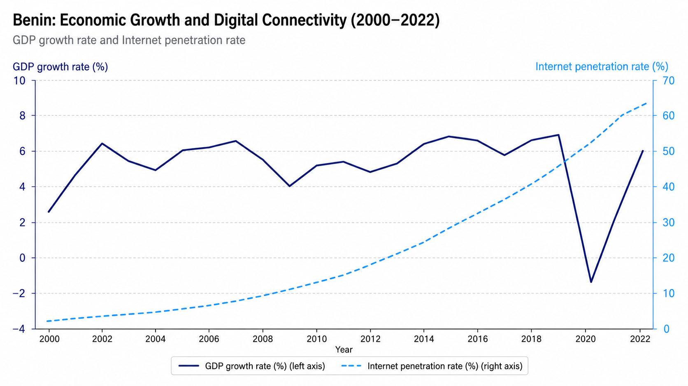

Je transforme les données brutes en décisions éclairées — statistiques appliquées, modélisation et ingénierie financière au service de projets qui comptent.
01 — À propos
Titulaire d'une Licence Professionnelle en Statistique Appliquée de l'École Nationale de Statistique, de Planification et de Démographie (ENSPD) de l'Université de Parakou, je travaille à la frontière entre l'analyse quantitative et la prise de décision concrète.
Mes missions couvrent la conception d'études, la collecte de données terrain, la modélisation statistique et la restitution de résultats sous forme de rapports et dashboards exploitables — pour des structures de santé, des projets académiques et des cabinets de conseil.
En parallèle, j'entame une formation en ingénierie financière, qui élargit mon champ d'intervention vers l'analyse financière et la modélisation économétrique.
Analyse financière · Évaluation de projets · Modélisation économétrique
ENSPD · École Nationale de Statistique, de Planification et de Démographie · Université de Parakou
02 — Compétences
Des logiciels statistiques aux outils de visualisation — chaque outil maîtrisé au service de l'analyse rigoureuse.
03 — Réalisations
Des études médicales aux diagnostics économiques — chaque projet, une question précise, une méthode rigoureuse.

Régression linéaire
Développement d'une nouvelle équation de correction par régression linéaire, améliorant la précision des formules existantes de calcul d'implants intraoculaires.

Régression logistique
Identification des déterminants de la non-observance par régression logistique binaire — quantification du poids de chaque facteur sur le comportement des patients.

Économétrie
Modélisation de la relation entre l'accès à Internet et l'évolution du PIB au Bénin. Lauréat de la 2ème place au concours national d'analyse de données.
Autres réalisations
Collecte et contrôle de données sur les usages numériques et dynamiques sociales en milieu universitaire. Agent enquêteur 2025, agent contrôleur 2026.
Conception de projets de collecte, traitement et analyse de données. Rédaction de rapports analytiques pour les besoins du cabinet.
Animation de sessions de formation à l'utilisation du logiciel R pour l'analyse de données statistiques, à destination d'étudiants et professionnels.
Analyse des conflits interpersonnels et VBG par méthodes multivariées. Comparaison des niveaux de stress académique par ANOVA — Université de Parakou.
04 — Parcours
Un parcours construit entre terrain, recherche et transmission — des universités béninoises aux projets de consulting, en passant par la compétition nationale.
05 — Témoignages
Félicitations. J'ai eu beaucoup de retours positifs en ce qui concerne la formation que tu as animée sur l'analyse de données avec le logiciel R.
Je voudrais te dire que je pense que tu as un très fort potentiel. Continue à travailler dur et bien comme tu le fais. Je n'ai aucun doute que tu auras de bons résultats en maintenant cette trajectoire. Merci encore pour ton appui et le travail sous stress avec moi.
Je tenais à te féliciter. Elle a beaucoup apprécié le travail.
06 — Contact
Analyse de données, études statistiques, dashboards ou formation — si votre projet nécessite de la rigueur quantitative, parlons-en.